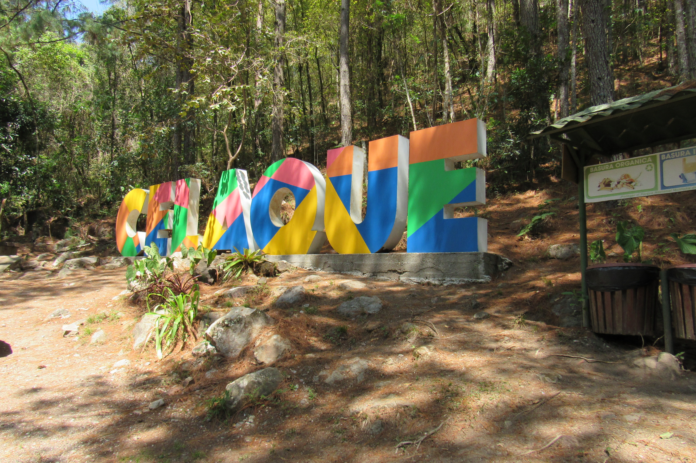

Copán Ruinas
Un sitio arqueológico reconocido por sus esculturas, plazas y legado de la civilización maya.
Conocer la rutaExplora paisajes extraordinarios, conoce nuestras raíces y vive experiencias que conectan con la naturaleza y la cultura hondureña.
Desde el legado de la civilización maya hasta los arrecifes del Caribe y las montañas cubiertas de bosque.
Un sitio arqueológico reconocido por sus esculturas, plazas y legado de la civilización maya.
Conocer la ruta
Playas caribeñas, comunidades isleñas y oportunidades para conocer la vida marina.
Conocer la ruta
Montañas, senderos y bosques que invitan a disfrutar el ecoturismo responsable.
Conocer la rutaPlanifica tu próxima aventura respetando las comunidades, la vida silvestre y el patrimonio cultural.